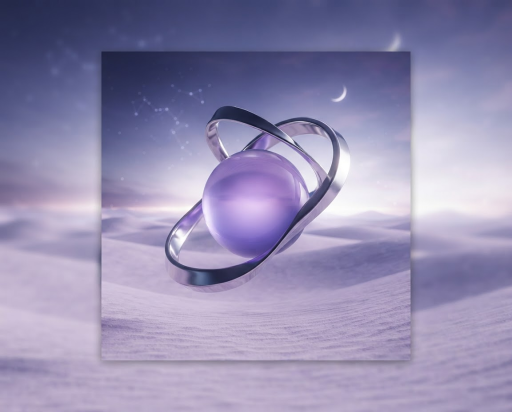

Olá, Matheus.
MT
STATUS DO SISTEMA
Operação estável.
Todos os serviços estão funcionando normalmente.

REQUISIÇÕES
24.8k
LATÊNCIA MÉDIA
42 ms
UPTIME
99.9%
PROJETO DEMONSTRATIVO · API
Pulse — API de serviços
Uma interface conceitual para acompanhar serviços, requisições e métricas de uma API.
Explorar projeto ↗